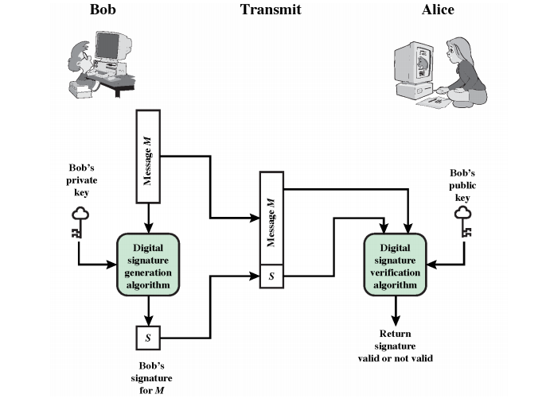
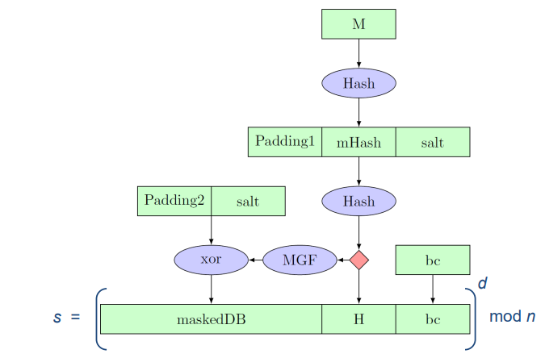
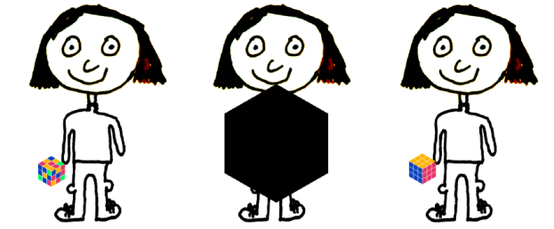
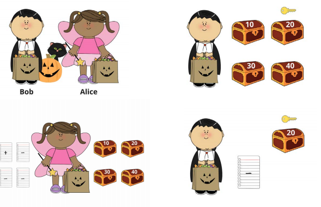
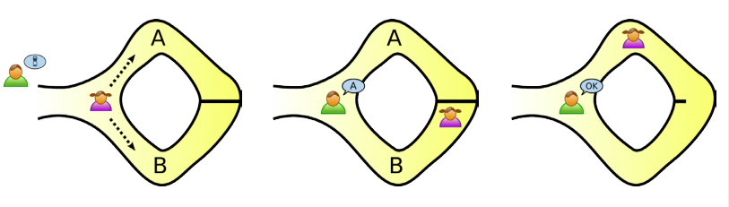
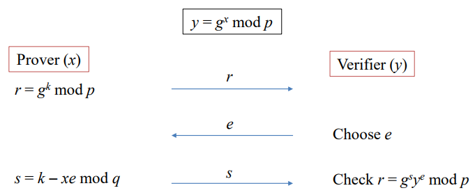

Chapter 11. 서명(Signatures)¶
1절. 디지털 서명(Digital Signatures)¶
디지털 서명(Digital Signatures) 정의¶
- 디지털 메시지나 문서의 진위를 증명하는 수학적 방식
- 인증 및 부인 방지
- 유효한 디지털 서명에 대한 수신자와 발신자의 정보
- 수신자 : 메시지가 발신자에 의해 생성되었음을 믿을 수 있는 이유 제공
- 발신자 : 메시지를 보낸 사실을 부인 불가
- 무결성
- 메시지가 전송 중에 변경되지 않음을 보장
디지털 서명(Digital Signatures) 알고리즘¶
키 생성 알고리즘(Key Generation Algorithm)¶
- 무작위 알고리즘
- \((pk, sk)\) 출력
서명 알고리즘(Signing Algorithm)¶
- 개인 키와 메시지를 받아 서명 출력
- \(s = Sign(sk, m)\)
검증 알고리즘(Verification Algorithm)¶
- 공개 키, 메시지, 서명 입력
- 메시지의 진위 주장에 수락 or 거부
- \(Vrfy(pk, m, s) = Y/N\)
일반적인 디지털 서명 과정¶

2절. RSA 서명¶
RSA 서명 (해쉬된 RSA 또는 FDH-RSA) 알고리즘¶
키 생성 알고리즘¶
- RSA 암호화와 동일
- 공개 키 = \((e, n)\)
- 개인 키 = \((d, n)\)
서명 알고리즘¶
- 입력
- 개인 키 = \((d, n)\)
- 메시지 = \(m\)
- 서명 \(s = H(m)^d\) \(mod\) \(n\) 계산
- \(H : {0, 1}^* → Z_n^*\)는 암호학적 해쉬 함수
검증 알고리즘¶
- 입력
- 공개 키 = \((e, n)\)
- 메시지 = \(m\)
- 서명 = \(s\)
- \(H(m) = s^e\) \(mod\) \(n\) 확인
번외) RSA 서명에만 해당되는 조건¶
- 서명(Sign) = 개인 키로 암호화
- 검증(Vrfy) = 공개 키로 복호화
RSA-PSS(Probabilistic Signature Scheme)¶

3절. DSS / DSA¶
디지털 서명 표준(DSS : Digital Signature Standard)¶
- 디지털 서명을 생성하기 위한 암호화 알고리즘을 설명하는 미국 정부의 FIPS(연방 정보 처리 표준) 186
- 총 네 번의 개정판
- FIPS 186-1 (1996)
- FIPS 186-2 (2000)
- FIPS 186-3 (2009)
- DSA, RSA 및 EC-DSA 포함
- FIPS 186-4 (2013)
DSA(Digital Signature Algorithm)¶
디지털 서명 알고리즘(DSA) 알고리즘¶
-
매개변수 : \((p, q, g)\)
-
키 생성 알고리즘
-
\(0 < x < q\) 범위에서 무작위 방법으로 비밀 키 \(x\) 선택
-
공개 키 \(y = g^x\) \(mod\) \(p\) 계산
-
서명 알고리즘
-
\(0 < k < q\) 범위에서 메시지 별 무작위 값 \(k\) 생성
- \(r = (g^k mod\) \(p)\) \(mod\) \(q\)와 \(s = k^−1(H(m) + xr)\) \(mod\) \(q\) 계산
-
메시지 \(m\)에 대한 서명 : \((r, s)\)
-
검증 알고리즘
- \(w = s^{−1}\) \(mod\) \(q, u_1 = H(m)w\) \(mod\) \(q, u_2 = rw\) \(mod\) \(q\) 계산
- \(v = (g^{u_1} y^{u_2}\) \(mod\) \(p)\) \(mod\) \(q\) 계산
- 서명 유효성 : \(v = r\)
4절. 0-지식 증명(Zero-Knowledge Proof)¶
ZKP¶
- 제로-지식 증명(Zero-Knowledge Proof)
- 제로-지식 프로토콜
- 한 당사자(증명자 Peggy)가 다른 당사자(검증자 Victor)에게 특정 값 \(x\)를 알고 있음 증명
- 해당 값 \(x\)를 알고 있다는 사실 외 어떠한 정보도 전달하지 않는 방법
속성¶
-
완전성(Completeness)
-
명제가 참일 경우
- 정직한 증명자가 정직한 검증자에게 사실 납득
-
건전성(Soundness)
-
명제가 거짓일 경우
- 부정직한 증명자가 정직한 검증자에게 그것이 참이라고 납득시킬 확률 매우 낮음
-
제로-지식(Zero-knowledge)
-
명제가 참일 경우
- 검증자는 명제가 참이라는 사실 외에 아무것도 알 수 없음
예시¶
- 루빅 큐브(Rubik Cube)

- 할로윈 사탕(Halloween Candy)

- 알리바바 동굴(AliBaba Cave)

5절. Schnorr¶
슈노르 식별(Schnorr Identification)¶

-
특별 정직-검증자 제로-지식
-
\((r, e, s)\)는 \(x\)를 알지 않고도 시뮬레이션 가능
-
특별 건전성 – \(e1 ≠ e2\)일 때, \((r, e_1, s_1)\)과 \((r, e_2, s_2)\)로부터 \(x\) 계산 가능
슈노르 서명(Schnorr Signature)¶
-
매개변수 : \((p, q, g)\)
-
키 생성 알고리즘
-
\(0 < x < q\) 범위에서 무작위 방법으로 비밀키 \(x\) 선택
-
공개키 \(y\)를 \(y = g^x\) \(mod\) \(p\)로 계산
-
서명 알고리즘
-
메시지마다 고유한 무작위 값 \(k\)를 \(0 < k < q\) 범위에서 생성
- \(r = g^k\) \(mod\) \(p,\) \(e = H(r,m), s=k−xe\) \(mod\) \(q\) 계산
-
메시지 \(m\)에 대한 서명 : \((s, e)\)
-
검증 알고리즘
- \(𝑟̂ = g^sy^e\) \(mod\) \(p\) 과 \(𝑒̂ = H(𝑟̂, m)\) 계산
- 서명은 \(𝑒̂ = e\)일 때 유효